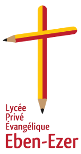

Présentation du centre scolaire
Les Écoles du Centre
1- Le Lycée Privé Évangélique Eben-Ezer

Un objectif majeur du Centre Eben-Ezer est d'être une structure d’appui à l’éducation. Un lycée a ainsi ouvert officiellement en octobre 2008 à Dédougou. Pour ce faire il vise à:
INSTRUIRE
- Enseignement général (1er et Second cycle) suivant le programme officiel
ÉDUQUER
- Cours de morale et de civisme
- Enseignement religieux
- Enseignement de l'art et de la culture
- Discipline
FORMER
- Informatique
- Multimédia
L'établissement met tout en place pour la réussite des élèves: il comprend des classes équipées, un terrain spacieux, une bibliothèque, une salle informatique et multimédia...
Cette structure encadrée par ses 10 professeurs a accueilli:
- 58 élèves en 2008/2009,
- 85 élèves en 2009/2010,
- 240 élèves en 2010/2011.
2- Le Lycée Technique Privé Eben-Ezer:
Nous avons reçu l'agrément du Ministère des Enseignements Secondaire et Supérieur pour la réalisation de cet établissement dans les filières:
- Secrétariat
- Bureautique
- Comptabilité
- Gestion
- Transport (cycles courts et longs).
Nous attendons la satisfaction dans les domaines des infrastructures et de l'équipement pour son ouverture.

3- Le Cours d'Appui et de Soutien Eben-Ezer (École du Soir)
Ouverte en 2010/2011, cette école fonctionne de 15 heures à 18 heures; Ces horaires ont été aménagées pour répondre au manque d'électricité publique. Le premier cycle est concerné pour l'instant.
Pour tout renseignement, veuillez prendre connaissance des informations générales ou nous contacter.
4- L'École de Nuit
L'École de Nuit permet aux élèves des différents établissements vivant dans les environs du Centre, d'avoir de la lumière, un tableau et une table pour étudier la nuit. Ainsi, grâce au soutien d'amis, 50 enfants en moyenne pour des études.
5- L'École d'Été.
Durant les grandes vacances d'été, le Centre organise chaque année des cours de remise à niveau d'élèves qui le désirent.
6- Les Cours de renforcement et de Mise à niveau.
Depuis 2001, le centre propose des cours de remise à niveau et de renforcement pour les classes d'examen. Avec l'ouverture du Lycée, ce cours prend une grande place pour aider au succès.